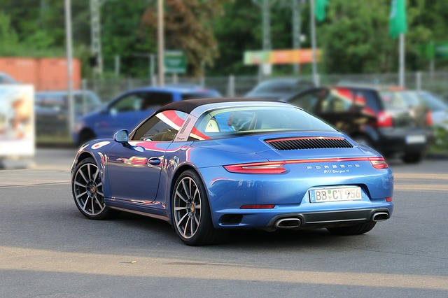

The Porsche 911 is a two-door, 2+2 high performance rear-engined sports car made since 1963 by Porsche AG of Stuttgart, Germany. It has a rear-mounted flat-six engine and all round independent suspension. It has undergone continuous development, though the basic concept has remained unchanged.[2] The engines were air-cooled until the introduction of the Type 996 in 1998, with the 993, produced from 1994–1998 model years, being the last of the air-cooled Porsche sports cars.
The 911 has been modified by private teams and by the factory itself for racing, rallying, and other forms of automotive competition. It is among the most successful competition cars. In the mid-1970s, the naturally aspirated 911 Carrera RSR won major world championship sports car races, such as Targa Florio and 24 Hours of Daytona, even against prototypes. The 911-derived 935 turbo also won the 24 Hours of Le Mans in 1979 and Porsche won World Championship for Makes titles in 1976, 1977, 1978 and 1979 with 911-derived models.
In the 1999 international poll to determine the Car of the Century, the 911 came fifth. It is one of two in the top five that had remained continuously in production, and was until 1998 a successful surviving application of the air- (now water-) cooled opposed rear-engine layout pioneered by its ancestor, the Porsche 356. It is one of the oldest sports coupé nameplates still in production with one million manufactured as of May 2017.
The Porsche 911 is a highly successful car, capable of beating the competition with ease when it competed in early competitions the car is still a powerful sports car with many advancements and improvements being made to the cars as new models of the car created.
Of course, with recent advancements in automobiles there would be a lot of changes to the Porsche 911 overtime. However, Porsche still manages to make a powerful sports car that still holds true to the original cars made in the 1900s.
The newest models of Porsche still hold true to their original 1900s counterparts as they are still the powerful and reliable sports cars that put Porsche on the map. There are multiple varients of the Porsche 911 just like the one pictured on the right. The varient highlighted here is dubbed the 'targa top' model as its most notable feature is the lack of roof combined with the curves and sleak styling of the back window portion of the car.
This particular exmaple of Porsche is the 2018 model that is still one of Porsches flagship line of cars. These cars are not cheap as a result of their sports car status as the newest models fetch for a hefty price of over $100,000 for the car on the right. The Porsche comes in multiple options too. Alongside the Targa top model on the right, there are other peformance packages that come with the 911.
As mentioned before multiple times, the Porsche 911 is one of the most popular sports cars out in the market today as it carries both history and is a rather badass sports car that many like to take out and drive.
For me personally, the Porsche 911 is just one of those cars that look good no matter what. A sleek sports car that is plenty capable of doing a lot such a rallying (yes they rallied these cars search it up) and most certainly on the track. Owning one of these would be a dream-come-true as I had always wanted to drive one. Specifically the early 1990s models as I believe those to be the best looking out of the bunch and also because I've read that the car is still a fun car to drive and completely capable of going quick around a track even as the base model.
Overall, the Porsche 911 is a car that I will always remember and as the new models of these cars are released, the more I want one eventually as I grow older. It is however, just a dream that I would ever own one, a dream that one day, I would at least be able to drive one and enjoy the feel of driving a legendary sports car.